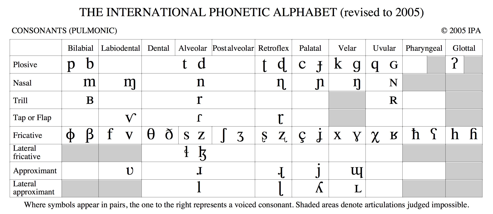
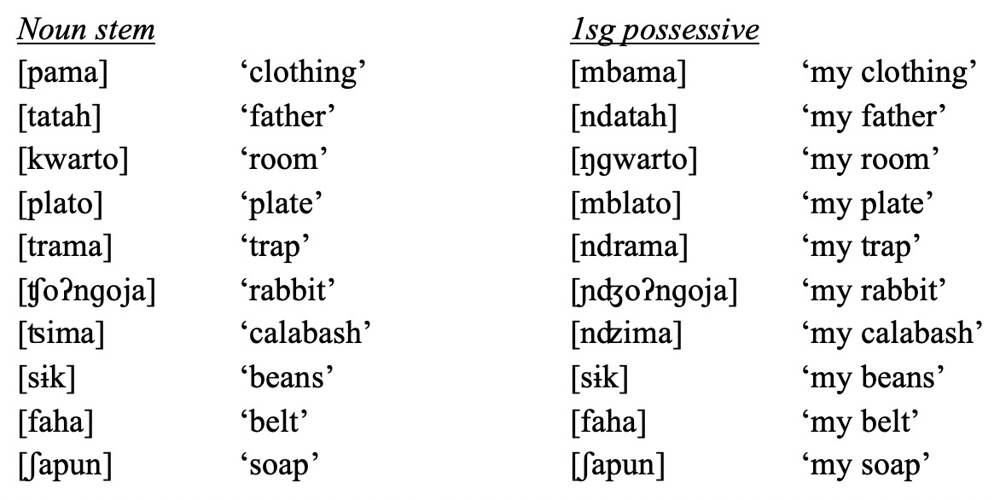

### Re-register your clicker on Canvas, please! --- <h1>Phonology for Morphology</h1> <H3>Dr. Will Styler - LIGN 120</h3> --- ### Last week, we discussed Phonologically Conditioned Allomorphy - "This morpheme could look like X, Y or Z depending on the surrounding sounds" - Let's do a bit of review on what this looks like --- ### Today's Plan - How do we write a phonological rule? - What's the difference between phonology and morphology? - Why does Morphology need phonology? - What do you need to know from Phonetics/Phonology to do this class? - Common phonological processes in morphology --- # Review: How do we write a phonological rule? --- ### The Basic Format /Starting State/ -> [Ending State] / [When the transformation happens] --- ### Phonological Rule Format - "X turns into Y in environment Z" - “X -> Y” means “X turns into Y” - -> is an arrow. -> is just easy to type. - Then the “/” which means “in the environment” - Then you add a blank, representing where the sound goes that's getting transformed “__” - ... And you position that blank relative to the conditioning environment. - Adding or removing sounds involves tranforming to or from 'ø' --- ### /Remus Lupin/ -> [Wolf] / [Full moon]  --- ### If /n/ turns to an /ŋ/ before [k]... - /n/ -> [ŋ] / __k - If it happened after [k]... - /n/ -> [ŋ] / k__ --- ### We won't require formal stating of phonological rules this quarter - Rules don't need to be stated using features - (Although sometimes, it's the best approach) - You will not be graded on the quality or elegance of your phonological argumentation - But if you're explaining how an alternation works, a quick rule is a great way to do so --- # Are phonology and morphology doing the same thing? --- ## No. --- ### Linguistics Students often mix up the roles of morphology and phonology --- ### The English Plural - There are three realizations of the English Plural - dogs, pubs, rags, dads, bins... - cats, bucks, cliffs, myths - dishes, fishes, kisses, pluses, judges --- ### A common mistake among new phonology students is to write rules like this... - ø -> [s] / [plural word] __ - ø -> [z] / [plural word] [C +voice]__ - ø -> [ɪz] / [plural word] [C +strident]__ - ### Why is this problematic? --- ### Phonology isn't in the business of modifying meaning - If adding something changes the meaning of the word, it's morphology's problem - We don't want to write phonological rules to account for morphological changes - *Phonology handles sound changes in the fully-constructed word!* --- ### We consider morphology to be a separate process ---  --- ### The Process - "First, we'll choose our stem: /dɑg/" - "But we need this to be plural, so we'll also need to add the /s/ suffix. This gives us /dɑg+s/" - "Then, we'll apply our phonological rule, /s/ -> [z] / [C +voice]__" - /dɑg+s/ -> [dɑgz] - "This gives us the final surface form, [dɑgz]" - See, that wasn't so ruff! - 🤣 --- (We'll talk more about this process later, but this works for now) --- ### Phonology and morphology are doing different things - Morphology builds the words, and phonology adapts the sounds to make the word legal --- ### "Oh, OK, so I can forget everything I learned in 111?!" - (Nice try) --- # Why does Morphology need Phonology? --- ## Review: Allomorphs The multiple forms which a given morpheme can take --- ### Allomorphs are generally *conditioned* - "This single *underlying* morpheme could show up *on the surface* in one of several ways" - Phonology is regularly responsible. - "We'll see one of these variants, *depending on the phonological structure of the base*." --- ### Examples of Allomorphy - -s, -z, and -ɪz are the three *allomorphs* of the English plural - They are predictable by knowing the voicing and stridency of the prior C - -t, -d, and -ɪd are the three *allomorphs* of the English past tense - They are predictable by knowing the voicing and place of the prior C - *These allomorphs are the surface result of the application of phonological rules!* --- ### Allomorphs are a *surface* concept - There is one English plural suffix, but it has three *wholly predictable* allomorphs - ... but they are three actual realizations of the plural - *Even if you can give us the rule(s) that create them, we'll still want you to list the allomorphs!* --- ### So, we need phonology for phonologically-conditioned allomorphy - ... and guess what: It's *everywhere!* --- # What do you need to know from Phonology for this class? --- ### Having taken 110 and 111 will help a *lot* - Your life will be around 30% better in this class if you've already taken LIGN 111 - Everything phonological we'll do in this class will be easier than most of what we did in 111 --- ### You'll want to know about basic phonetic/phonological concepts - Consonants vs. Vowels - Vowel height, backness, and rounding - Consonant place, manner, and voicing - [Syllables and syllabification](http://wstyler.ucsd.edu/talks/l111_13_syllables.html#/20) --- ### You'll need to be familiar with the IPA - You need to know how and why it's organized - You want to have it close at hand -  --- ### Time spent learning the IPA well will pay off *over and over again*  --- ### You'll want to be familiar with articulatory thinking - "Openness" of consonants and sonorance - *Why* would a /d/ infix become [z] between vowels? - "Coarticulation" leading to changes in surrounding sounds - *Why* would /k/ be fronted before /i/? - "Naturalness" of phonological rules and processes - If /k/ is becoming [b] before a uvular, that's likely not phonological --- ### If you've not taken 110 OR 111, you're going to have an uphill battle - We can help in office hours - It's a great idea to brush up on your IPA *now* - I can point you towards some books that might help - [Dave Odden's Introducing Phonology](https://www.cambridge.org/core/books/introducing-phonology/33F7A04358A15407E6D73C8AA92D4FD9) is a good one - My [slides for Phonology](http://savethevowels.org/111) are still online --- ### You will often need to "look past" phonology to understand the problems here - Common phonological problems will obscure your problems! - We should talk about those! --- # Common Phonological Processes in Morphology --- ### Common Phonological Processes in Morphology - Assimilation - Epenthesis - Deletion - Palatalization - Metathesis - Fortition or Lenition - Harmony - Neutralization* --- ### What's the opposite of... - Logical - Formal - Variable - Glorious - Dependent - Legal - Regular - Mobile - Proper - Expensive - Relevant - Sufficient - Correct --- ### <clb>im-</clb> | <clp>il-</clp> | <clo>ir-</clo> | <clg>iŋ</clg> | <clr>in-</clr> <clb> Mobile<br> Proper<br> </clb> <clo> Relevant<br> Regular<br> </clo> <clp> Logical<br> Legal<br> </clp> <clg> Correct<br> Glorious<br> </clg> <clr> Sufficient<br> Dependent<br> Formal<br> Variable<br> Expensive<br> </clr> --- ### <clb>im-</clb> | <clp>il-</clp> | <clo>ir-</clo> | <clg>iŋ</clg> | <clr>in-</clr> - <clb>im-</clb> before labials - <clp>il-</clp> before /l/ - <clo>ir-</clo> before /ɹ/ - <clg>iŋ</clg> before velars - <clr>in-</clr> everywhere else --- ### This is Assimilation - "Take on (some of) the characteristics of a nearby sound" - Can be partial assimilation ('match this feature') - ... or total assimilation ('become the same sound') - **Nasals LOVE to assimilate!** --- ### Epenthesis - Insert a sound to prevent an awkward combination of sounds - mod+d -> modded --- ### Deletion - Remove a sound to prevent an awkward combination of sounds - in+relevant -> irrelevant --- ### Palatalization - Palatal sounds often make other sounds palatal - tree -> 'chree' --- ### Metathesis - Swap two adjacent sounds around in the word --- ### Metathesis <center> <style type="text/css"> .tg {border-collapse:collapse;border-spacing:0;} .tg td{font-family:Arial, sans-serif;padding:10px 5px;border-style:solid;border-width:1px;overflow:hidden;word-break:normal;border-color:black;} .tg th{font-family:Arial, sans-serif;font-weight:normal;padding:10px 5px;border-style:solid;border-width:1px;overflow:hidden;word-break:normal;border-color:black;} .tg .tg-s268{text-align:left} .tg .tg-0lax{text-align:left;vertical-align:top} </style> <table class="tg"> <tr> <th class="tg-s268">'non-actual'<br></th> <th class="tg-0lax">'actual'<br></th> <th class="tg-0lax"></th> </tr> <tr> <td class="tg-s268">qq'í</td> <td class="tg-0lax">qíq'</td> <td class="tg-0lax">'restrain'<br></td> </tr> <tr> <td class="tg-s268">pkʷ'ə́</td> <td class="tg-0lax">pə́kʷ'</td> <td class="tg-0lax">'smoke'<br></td> </tr> <tr> <td class="tg-s268">t'cə́</td> <td class="tg-0lax">t'ə́c</td> <td class="tg-0lax">'shatter'</td> </tr> <tr> <td class="tg-s268">kʷ'sə́</td> <td class="tg-0lax">kʷ'ə́s</td> <td class="tg-0lax">'count'</td> </tr> </table> </center> (from Klallam, a Salish language of Vancouver) --- ### Fortition or Lenition - **Fortition**: Making a consonant stronger (i.e. more closed) - /s/ -> [t] - **Lenition**: Making a consonant weaker (i.e. more open) - /b/ -> [β] --- ### Harmony - Where a feature from one segment spreads through the word - Often occurs with vowel features (e.g. Turkish, Finnish, Yokuts) - Can occur with nasality too (usually near Uruguay!) --- ### Turkish exhibits vowel harmony in morphological datasets -  --- ### Neutralization - This isn't a phonological process, but a result - When a phonological rule *removes a contrast* - "This morpheme *doesn't seem to get attached here*" - It did attach, but got removed! --- ### Zoque  --- ### Not all missing affixes are phonological! - Sometimes, the morpheme isn't attached for lexical reasons - Cat -> Cats - Deer -> Deer - Elk -> Elk - Mouse -> Mice --- ### Wrapping Up - Phonology and Morphology have different goals - Morphology needs to 'look past' phonology - You want to make sure you've got phonological basics for this class - Understanding common phonological processes will help! --- ## For Next Time - Get a jump on the next discussion post - We'll give some tips for morphological analysis! --- <huge>Thank you!</huge>